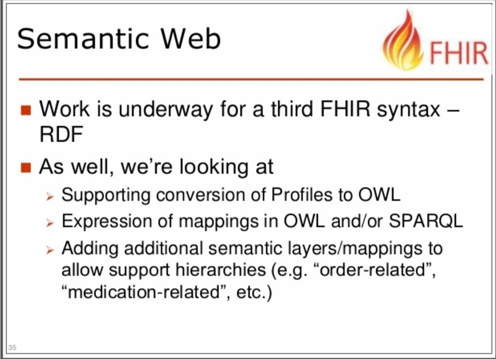
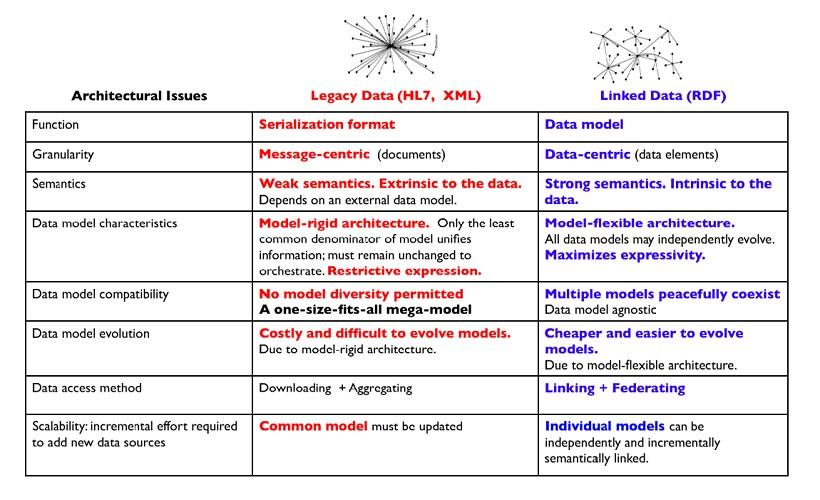
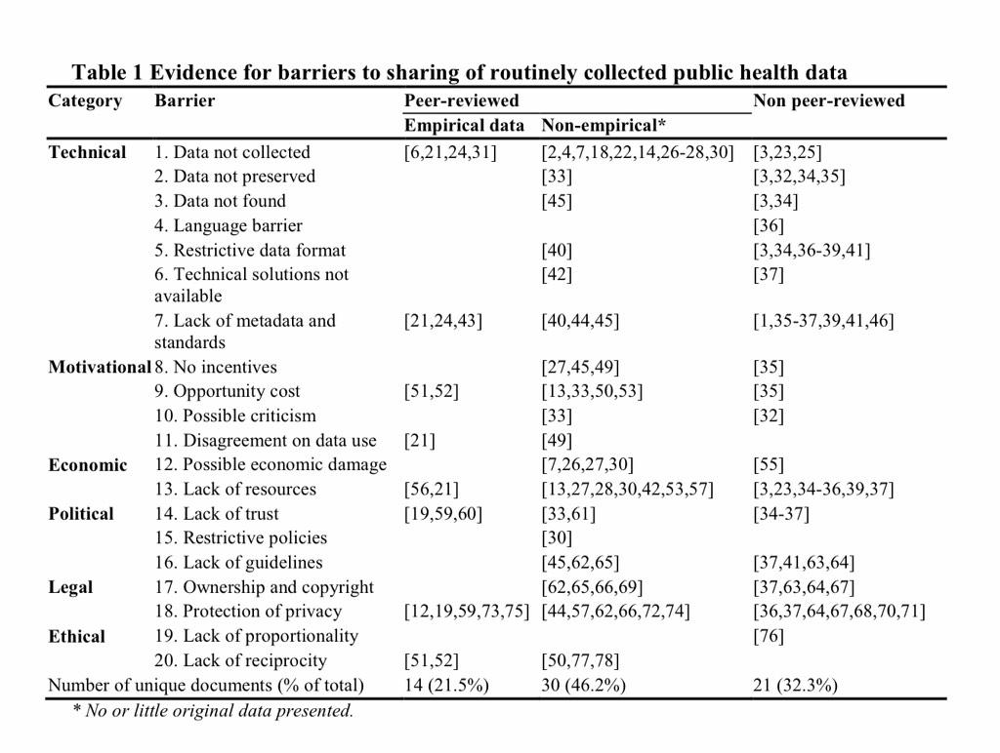
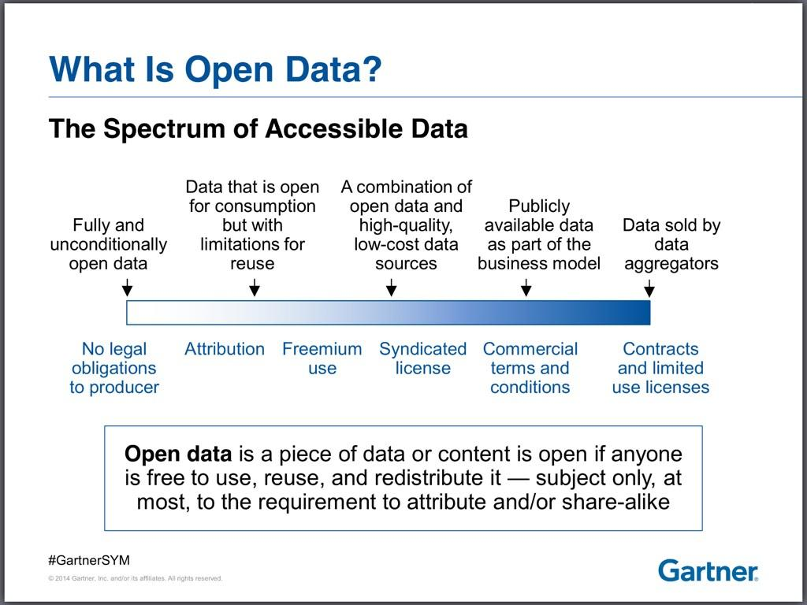
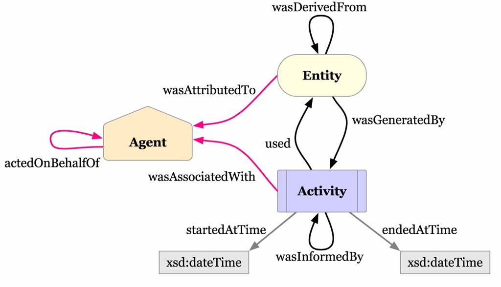
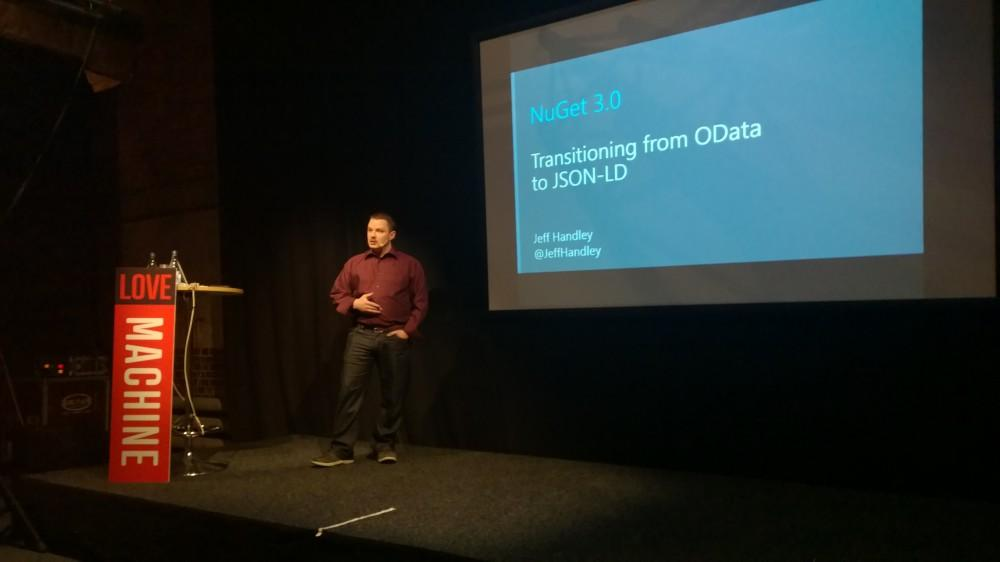
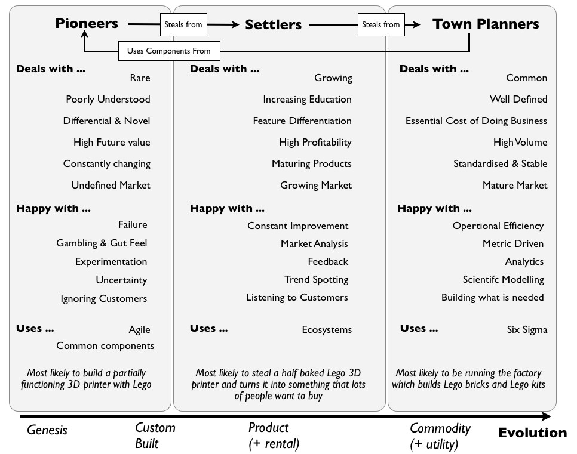
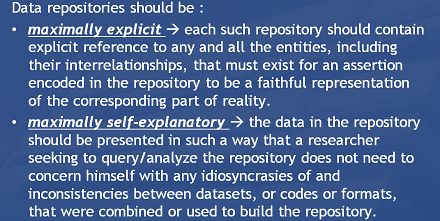

November 2014
How I did on Twitter this week: 13 New Followers, 4 Mentions, 2.98K Mention Reach. How'd your week go? via sumall.com/myweek
Reading about @confluentinc "Realtime data streams" and thinking of #MOOCT Massive Open Online Clinical Trials medium.com/@kerfors/parti…
Terminology, value-sets, codesystems by Lloyd McKenzie @HL7 #FHIR #SemanticWeb slideshare.net/DevDays2014/te…

My best RTs this week came from: @pernillan @nopiedra @NoSQLDigest @kennedianskt @faith6357 #thankSAll via sumall.com/thankyou
Dags för Öppna Data dfs.se/dags-att-oppna… #OppnaData Vitbok länkade öppna data lankadedata.se/vitbok/ #LankadeData
I've registred for "Yosemite Project: An RDF Roadmap for Healthcare Info Interoperability" webinars 5, 12, 19 Dec semanticweb.com/tag/yosemite-p…
Anteckningarna till @pernillan's morgon session Kom igång med #OppnaData på #Webbdagarna: bit.ly/komoppnadata <- kanonbra sammanfatttning
Catching up on #ekaw2014 Conf on Knowledge Engineering/Management, Nov 24-28, Linköping, Sweden @EKAWConf2014 ida.liu.se/conferences/EK…
We are looking for a Solution Engineer, AstraZeneca R&D Information, Sweden jobs.astrazeneca.com/jobs/details/l… #itjobs
Excellent: @wikidata entities now have #LinkedData resolveable URIs lists.wikimedia.org/pipermail/wiki… via @edsu #Wikidata
+1 MT @andrewsu: NIH #BD2K funding announcement for #MOOC on Data Management for Biomedical Big Data (R25) grants.nih.gov/grants/guide/r…
On my way to day 2 of our @neo4j onsite course, watching @_nicolemargaret's hands-on demo of load csv neo4j.com/blog/webinar-u… #neo4j
MT @AstraZeneca: AZ scientist appointed as @RSC_Science Industrial Associate ow.ly/EO2b5 cc: @cdsouthan
@deeped @pernillan jobannons "drug project info advocate/champion who can facilitate access to complex info needs" jobs.astrazeneca.com/jobs/details/l…
Bad planning: In Stocholm for #FotoMassan travelling back tonight, tomorrow it's @internetdagarna #oppnadata internetdagarna.se/program/det-ba… #ind14
Researchers @gatesfoundation funds must make open resulting papers & data-sets upon publication <- 1 of 5 star 5stardata.info
How I did on Twitter this week: 10 New Followers, 2 Mentions, 1.23K Mention Reach. How'd your week go? via sumall.com/myweek
Wow -> MT @chalmerslibrary: Chalmers launches the first #MOOC in #graphene edx.org/course/introdu… It starts in March 2015 #moocse
My best RTs this week came from: @westr @neo4j @nxtstop1 @wareFLO @nopiedra #thankSAll via sumall.com/thankyou
Thank you -> RT @strataconf: #StrataHadoop session slides strataconf.com/slides from speakers who have chosen to share them
Nice use of #openFDA to show men/women drug reactions genderedreactions.com Ping @CMWallberg HT @schmidtdav
Two @edXOnline courses starting in '15 April: Data Analysis edx.org/node/5611 Scalable Machine Learning #spark edx.org/course/uc-berk…
2 cool events in Göteborg Wednesday 10 Dec: 2) @dataforeningen Länkade Data - Vad, varför och hur @MetaSolutionsAB natverk.dfs.se/lankade-data-v…
2 cool events in Göteborg Wednesday 10 Dec: 1) Lunch&Learn with @neo4j #neo4j #graphs eventbrite.com/e/neo4j-lunchl… #gbgftw
@Internetmuseet Volvo kollegorna: "Varför är du så besatt av den där web grejen?" kerfors.blogspot.se/2014/02/why-ar… nu samma fråga om #SemanticWeb
Having lunch and watching keynotes from #StrataHadoop Barcelona 2014 livestream:ed at strataconf.com/live
@Tamr_Inc I'm just watching the demo: Do you handle EAV structured data, together with supporting metadata? en.wikipedia.org/wiki/Entity%E2…
Today I'll try to follow: first day of #StrataHadoop Barcelona strataconf.com/strataeu2014 and last day of #AMIA2014 amia.org/amia2014
"reasoner-friendly" - nice expression in the meeting for @HL7 ITS subgroup: RDF for Semantic Interop
I' m not at #AMIA2014 but I can watch the keynote speaker Amy Abernethy on @TEDMED youtu.be/0ED9YSxgB9w HT @wareFLO
Busy feed of mine this weekend with two great events: #AMIA2014 amia.org/amia2014 and #opencon2014 opencon2014.org
Excellent -> RT @AMIAinformatics: Following #AMIA2014 from afar? Check out our tagboard tagboard.com/AMIA2014/198848
Will look into @LOINC - @SnomedCT Mappings and Expression Associations loinc.org/resolveuid/df9… in relation to slideshare.net/kerfors/mie2014
IHTSDO @SnomedCT looking for Business Analyst, Front End Developer, Technical Project Mgr ihtsdo.org miss #SemanticWeb skills
How I did on Twitter this week: 12 New Followers, 3 Mentions, 1.12K Mention Reach. How'd your week go? via sumall.com/myweek
My best RTs this week came from: @AdamSinger @Cascadia @nopiedra @paullikeme @skram #thankSAll via sumall.com/thankyou
It's been a busy week so I haven't had the time to follow #biohack14 @biohackathon Here's the wiki with all projects github.com/dbcls/bh14/wik…
Concluding slide @SemanticWeb webinar: Data Integration, Legacy vs LinkedData for EHR data semanticweb.com/tag/yosemite-p…

Yes! RT @Felienne: Want to be a spreadsheet superhero?? Registration for my @edXOnline MOOC ow.ly/Ealvq ow.ly/i/7yzSu
+10 MT @MetaSolutionsAB: Seminarium om länkade data, @dataforeningen, Göteborg, 10 dec natverk.dfs.se/lankade-data-v… #oppnadata #lankadedata
+1 Blog fr @omowizard incl a nice video w @DipakKalra: #EHR building blocks bit.ly/1v24mcc #openEHR <- @cdiscSHARE #INT2014 Checkout
One more event to follow today #OpenUp14 Boundaries of Openness and Privacy @OmidyarNetwork openup2014.org #OpenData
A systematic review of barriers to data sharing in public health biomedcentral.com/1471-2458/14/1… h/t @trished @skram

I'm fascinated by the @wikidata model. One day I would like to apply in on clinical data, see plus.google.com/10417714442040… @vrandezo #wikidata
Bookmarked: "Using electronic health records for clinical research: The case of the EHR4CR project" on CiteUlike ift.tt/1pO6DWv
Semantic interop info-structure youtu.be/AvxaYncLXy8 "#openEHR Archetypes = Shapes" -@DipakKalra <- Checkout w3.org/2014/data-shap…
+1 RT @hconstandt: Nice def of #OpenData and its spectrum "data free to use, reuse or redistribute it" #GartnerSYM ”

@hconstandt @Sve_Sic @Gartner_inc Nice, would love to see the slides and/or a blog - I argue corps should launch data.corp.com
This week I'll follow #INT2014 @CDISC Int'l Interchange cdisc.org/international-… HT @bronkisler youtu.be/jbGMclv7iNg
"#BigData challenges FDA faces: 1/3 Provenance" @DrTaha_FDA information-management.com/news/fda-big-d… <- Checkout w3.org/TR/prov-primer/

@jeffhandley @oredev "Nuget 3.0 - Transitioning from OData to JSON-LD" #oredev <- Nice! Recording on Vimeo??

Cool: @IFTTT (If This, Then That ) Microsoft Office 365 channels will use new REST APIs blogs.office.com/2014/10/28/new… #api #apise
Nice day by the sea and in the garden, now catch up on #biohack14 2014.biohackathon.org @biohackathon lots of interesting #SemanticWeb
How I did on Twitter this week: 10 New Followers, 8 Mentions, 28.8K Mention Reach. How'd your week go? via sumall.com/myweek
Looking forward to tonight's (8pm CET) @SemanticWeb webinar on RDF and healthcare data, see my blog kerfors.blogspot.se/2014/10/rdf-as… HT @ericaxel
Looking forward to tomorrow's @SemanticWeb webinar on #RDF and #healthcare data semanticweb.com/new-webinar-an… see my blog kerfors.blogspot.se/2014/10/rdf-as…
Interesting -> @jaykreps from LinkedIn starts @confluentinc around Apache Kafka and realtime data linkedin.com/pulse/article/…
+1 RT @bengoldacre: What should Cochrane do next? badscience.net/2014/11/what-s… featuring @mavergames' #LinkedData work on data.cochrane.org
Scientists, and well everyone really should use twitter mallemaroking.org/why-i-twitter/ <- 9 good reasons n a post @byicey_mark via @amrapaliz
New blog post: My #ISWC2014 Trip report kerfors.blogspot.se/2014/11/iswc20… also with links to reports from @tomayac @pgroth @RubenVerborgh
Excellent initiative by Jozef Aerts, XML4pharma, RESTful Web Services for use with #CDISC standards cdisc-end-to-end.blogspot.se/2014/11/more-w…
@PistoiaAlliance @cdsouthan And we have a framework for terminology mappings slideshare.net/kerfors/cim2014 cc: @gray_alasdair @SALUSProject_EU
Remember our 2000 @w3c paper "Extensible use of RDF in a Business Context" www9.org/w9cdrom/323/32… -> seobythesea.com/2014/11/early-… @bill_slawski
@cdsouthan Nice collaboration. Great to see how the WikiData backend develops, e.g. blog.wikimedia.de/2014/10/22/est… and wikidata.org/wiki/Wikidata:…

+10 MT @swardley: The 3 types of people (and culture) your organisation needs <- from blog.gardeviance.org/2012/06/pionee…

Looking foward to see the video: The Application of Directed Graphs to Clinical Development hubs.ly/y0fH280 @dWiseTech's Ian Fleming
MT @RebarInter: TBL on the future of the Web rbr.cm/10ftkGy Good read. And mention of clinical research. #InfoAccountability
MT @phaase: Wikidata SPARQL queries using #LinkedDataFragments (LDF) wikidataldf.com #LinkedData #WikiData
Thx for RT @subatomicdoc @GerryWieder @MandiBPro of my blog: RDF as a Universal Healthcare Exchange... bit.ly/1zZ0Ils #HITsm #hcsm
MT @AlecGaffney: FDA: Improve the Clinical Trials Process ow.ly/DtvDH <- Via "Smart Program Design"? ift.tt/1AfX1pp
I love this new @altmetric "app"! Profile based on my @ORCID_Org ID: altmetric-orcid-profiles.herokuapp.com/0000-0002-1491… via @egonwillighagen
@HolgerKnublauch @RubenVerborgh Things change: great industry track and 10 people from pharma industry attended storify.com/kerfors/iswc20…
"maximally self-explanatory and explicit data sets / repositories" referent-tracking.com/RTU/sendfile/?… #icbo2014
